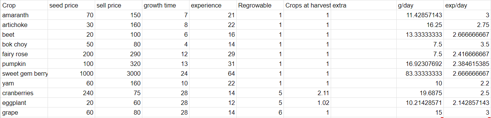

Fall is the last time to plant before winter (Yeah, I know winter seeds exist, they aren't worth mentioning.) While not quite as profitable as summer, it does still have some strong options for crops. There's quite a bit of variety, and fall also has the best flower available, so if beehives are your thing, go crazy! This is my personal favorite season in Stardew, it looks so great it makes it easy for me to decorate, since I don't do very well on my own! Lots of good looking crops to pick from here!
While, obviously, Sweet Gem Berries are the best, they aren't consistant, and, once again, I was surprized to see Cranberries on top. Pumpkins aren't far behind though, and they can grow into giant variants, which can be a nice surprise or a permanent decoration on your farm! Amoranth... well, you use it for a quest at least? And it looks kinda cool? I'll be honest though, I've always thought the design of bok choy is really cool looking in the ground!